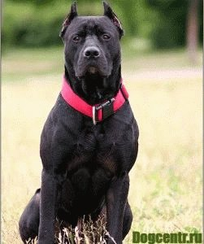
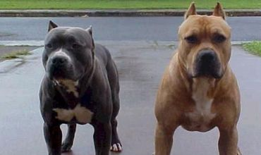

Про Питбулей
Питбули делятся на два основных типа — терьеры и бульдожий тип, также встречаются эти два смешанных типа. Вес не имеет строгих ограничений и может различаться — от 12 до 36 кг, но обычно 14—28 кг. Окрас у питбультерьера может быть любой (кроме окраса мерль), он может быть как сплошной, так и тигровый, а также с отметинами. Уши могут купироваться, могут не купироваться. Хвост не купируют. Голова может быть как по бульдожьи широкой и короткой, так и «шиломордой» по-терьеровски. Характер у питбультерьеров очень волевой, они отличаются повышенной азартностью и сильным боевым духом. Склонны к зооагрессии. Питбультерьер неплохо чувствуют себя в обычной городской квартире, но при этом им просто необходимы регулярные спортивные прогулки и общение со своими сородичами. Питбультерьеру будет удобней в кругу семьи хозяина, так как постоянное одиночество может отрицательно повлиять на психику собаки. Оставлять собаку с детьми без присмотра взрослых запрещено. Нуждается в социализации, раз в полгода собаку необходимо купать и периодически вычёсывать шерсть.
 